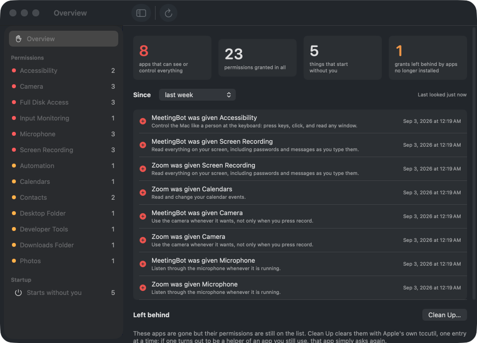
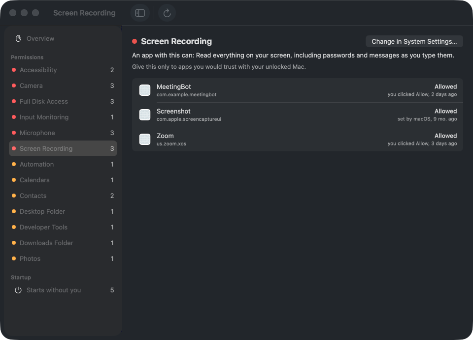

Every permission on your Mac.
One screen. Plain English.
Camera, microphone, screen, keyboard, files, contacts, automation, and everything that starts without you. What each app can do, how it got it, and what changed since last week.
Download for macOS Free. Open source. macOS 14 or later.

What it does
Says what it means
"Read everything on your screen, including passwords and messages as you type them." Not "Screen Recording". Most sensitive first.Tells you what changed
A record each time it looks. Given, refused, removed, since yesterday or last month. A notification when an app gains one of the big ones.Shows what starts without you
Launch agents, daemons and login helpers, with when they run and what they start. Apple's own hidden by default.Never changes a permission for an app you have
One Full Disk Access grant so it can read the list. Every switch stays in System Settings, one click away. Leftovers from apps you removed can be cleared in one click, with Apple's own tool.
Also a real command line
permsmac list permsmac changes --since 7d permsmac startup permsmac orphans all with --json. The changes command exits 1 when something changed, so it drops into a script.
Honest limits
Location Services and Local Network live somewhere only root can read; their panes are still one click away. Removing a launch agent is a Finder job, on purpose. The update check asks GitHub once a day for a version number and can be turned off.
MIT licensed. Part of a family with Clip for Mac, Tidy for Mac and Stash for Mac.